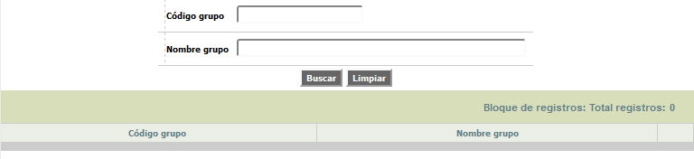
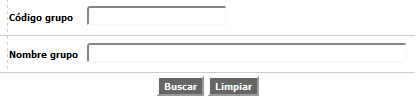
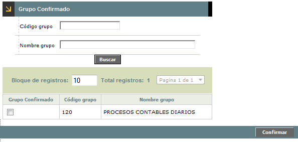

Grupos en espera confirmación |
Esta opción le permite al usuario confirmar aquellos Procesos que hayan sido parametrizados con el campo Iniciar con Confirmación en la opción Definición grupos de procesos, y sólo se mostrarán para confirmar en el momento en que el sistema haya llegado a su ejecución, de lo contrario esta opción se mostrará sin registro alguno, tal como se ve en la siguiente imagen.

El formulario cuenta con un filtro que le permite al usuario hacer consultas selectivas por el código del grupo y el nombre del grupo.

Al ejecutar los procesos que se encuentran en la opción Automatización de ejecución procesos, el sistema evalúa cuál de ellos tiene el parámetro indicado anteriormente y crea un registro temporal en esta opción, esperando que el usuario asignado a la gestión de los procesos realice la acción de Confirmar el proceso, la cual permitirá al sistema continuar con la ejecución de todos los demás procesos automáticos incluidos en la malla.
Esta acción será necesaria cada vez que el sistema identifique un grupo de procesos marcado como Iniciar con Confirmación. Una vez se utilice el botón de Confirmar, el sistema continuará con los demás procesos parametrizados en la Definición grupos de procesos.
